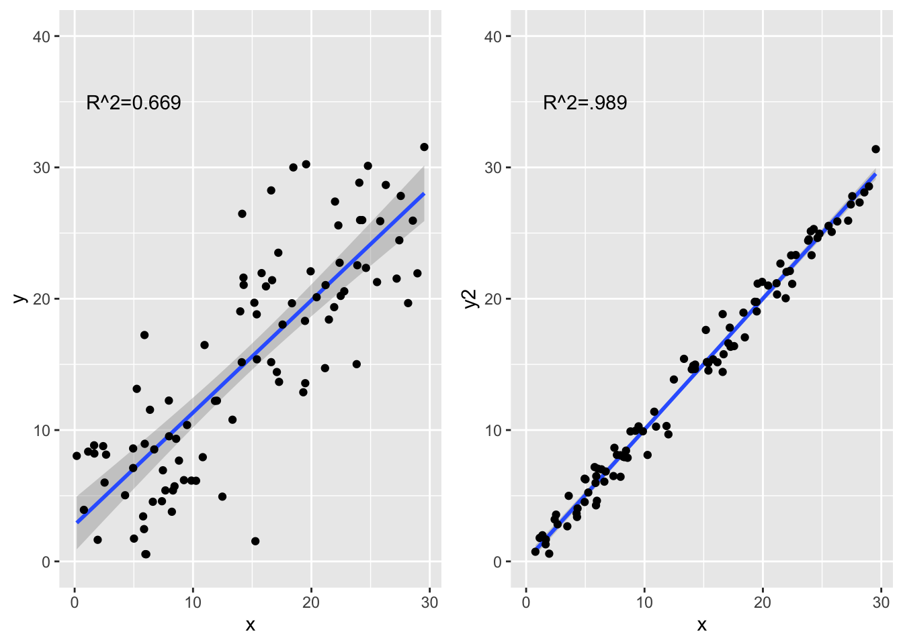

T13_Correlacion
Fecha de la ultima revisión
## [1] "2020-07-27"Install packages
La correlaciones son métodos para evaluar la relación entre dos o más variables.
Ejemplos
- La cantidad de colesterol, LDL (lipoproteínas de baja densidad) y HDL (lipoproteínas de alta densidad).
- La concentración de vitamina C y la absorción de calcio.
- La consumo de alcohol y la concentración de alcohol en la sangre.
Los analísis se hacen comparando las variables continuas en pares. La covarianza es la medida de variabilidad conjunta entre dos variables.
Primero recordamos la formula para calcular la varianza de una variable
\[s^{ 2 }=\frac { \sum _{ i=1 }^{ n }{ (x_{ i }-\bar { x } ) } ^{ 2 } }{ n-1 }\]
Ahora la vamos a descomponer
\[s^{ 2 }=\frac { \sum _{ i=1 }^{ n }{ (x_{ i }-\bar{ x } ) } (x_{ i }-\bar { x } ) }{ n-1 }\]
Correlación de Pearson
Esta la más común y conocida como el Coeficiente de correlación de Pearson. Nota ahora que tenemos dos variables x y y.
Podemos ver cual es la relación entre la edad de los estudiantes y cuantas veces fueron a Disney en Orlando, Florida. El objetivo es evaluar el covarianza entre una variable y otra.
| Personas | Maria | Juan | José | Carla | Luis |
|---|---|---|---|---|---|
| Edad (x) | 8 | 9 | 10 | 13 | 15 |
| Veces a Disney (y) | 5 | 4 | 4 | 6 | 8 |
| Personas | Edad (x) | x^2 | Veces a Disney (y) | y^2 | xy |
|---|---|---|---|---|---|
| María | 8 | 9 | 10 | 13 | 15 |
| Juan | 9 | 4 | 4 | 6 | 8 |
| José | 10 | ||||
| Carla | 13 | ||||
| Luis | 15 | ||||
| Sumas |
La siguiente formula muestra el calculo para el coeficiente de Pearson \(\rho\) que se dice rho que es el parámetro (el universo). Para significar el coeficiente de una muestra se usa la r.
\[r=\frac { cov(x,y) }{ { s }_{ x }{ s }_{ y } } =\frac { \sum { ({ x }_{ i }-\bar { x } _{ i })({ y }_{ i }-\bar { y } _{ i }) } }{ n-1({ s }_{ x }{ s }_{ y }) }\] Una otra manera de ver como se calcula el coeficiente es usar la siguiente formula.
\[r=\frac{\sum_{ }^{ }xy-\left(\frac{\sum_{ }^{ }x\sum_{ }^{ }y}{n}\right)}{\sqrt{\left(\sum_{ }^{ }x^2-\frac{\left(\sum_{ }^{ }x\right)^2}{n}\right)\left(\sum_{ }^{ }y^2-\frac{\left(\sum_{ }^{ }y\right)^2}{n}\right)}}\]
Creamos un conjunto de datos para demostrar como se calcula
Edad<-c(8,9,10,13,15)
Disney<-c(5,4,4,6,8)
dfDisney<-data.frame(Edad, Disney) # unir las listas en un data frame
dfDisney$Edad2=dfDisney$Edad^2
dfDisney$Disney2=dfDisney$Disney^2
dfDisney$Edad_por_Disney=dfDisney$Edad*dfDisney$Disney
dfDisney## Edad Disney Edad2 Disney2 Edad_por_Disney
## 1 8 5 64 25 40
## 2 9 4 81 16 36
## 3 10 4 100 16 40
## 4 13 6 169 36 78
## 5 15 8 225 64 120Lo que necesitamos ahora es calcular cada una de las variables
library(knitr)
library(kableExtra)
df <- data.frame(Formulas = c("$$\\sum x $$","$$\\sum y$$", "$$\\sum x^2$$", "$$\\sum y^2$$", "$$\\sum xy$$"),
Sumas = c(55, 27, 639,157, 314))
kable(df, escape=FALSE)| Formulas | Sumas |
|---|---|
| \[\sum x \] | 55 |
| \[\sum y\] | 27 |
| \[\sum x^2\] | 639 |
| \[\sum y^2\] | 157 |
| \[\sum xy\] | 314 |
Ahora sustituir los valores en la ecuación para calcular el coeficiente de Pearson.
\[r=\frac{314-\left(\frac{55\cdot27}{5}\right)}{\sqrt{\left(639-\frac{\left(55\right)^2}{5}\right)\left(157-\frac{\left(27\right)^2}{5}\right)}}=0.871\] La función para hacer todos estos calculo es cor. Con una correlación de 0.87, esto significa que hay buena correlación positiva entre la edad y la cantidad de veces que han ido a Disney.
cor(Edad, Disney)## [1] 0.8711651Un gráfico de Correlación sencilla. Miran que parece haber un patrón de cuando aumenta una variable aumenta la otra.
scatter<-ggplot(dfDisney, aes(x=Edad, y=Disney))
scatter + geom_point(colour="purple")+
geom_hline(aes(yintercept=mean(Disney)))+ # las lineas representa el promedio de la variable en *y* los valores
geom_vline(aes(xintercept=mean(Edad))) # las lineas representa el promedio de la variable en *x* los valores
El rango del coeficiente Pearson
El coeficiente de correlación varía de −1 a 1. El valor de 1 implica que la relación entre X e Y es perfecta positiva, en otra palabra la x predice exactamente el valor de y. Un valor de -1 implica que los datos predicen una relación negativa perfecta entre la x y y. Cuando el valor de 0 o cerca esto implica que no existe una correlación lineal entre las variables.
Los supuestos del modelo
- Uno de los supuestos de la prueba de análisis de Pearson, es que las dos variables tenga una distribución normal, Nornal bivariada.
- Las variables tienen que tener una correlación lineal (no por cuadrática o logarítmica).
Para visualizar una distribución vea lo siguiente. Nota que ls dos variables tienen una distribución normal.
Este gráfico proviene del siguiente website http://lertap5.com/RMCS2017/HTML/bivariate-normal.html

Dealing with missing values use the following function use = “pairwise.complete.obs”.
Kendall Correlation
In statistics, the Kendall rank correlation coefficient, commonly referred to as Kendall’s tau coefficient (after the Greek letter τ), is a statistic used to measure the ordinal association between two measured quantities. A tau test is a non-parametric hypothesis test for statistical dependence based on the tau coefficient.
It is a measure of rank correlation: the similarity of the orderings of the data when ranked by each of the quantities. It is named after Maurice Kendall, who developed it in 1938,[1] though Gustav Fechner had proposed a similar measure in the context of time series in 1897.
Intuitively, the Kendall correlation between two variables will be high when observations have a similar (or identical for a correlation of 1) rank (i.e. relative position label of the observations within the variable: 1st, 2nd, 3rd, etc.) between the two variables, and low when observations have a dissimilar (or fully different for a correlation of -1) rank between the two variables.
Spearman Correlation
In statistics, Spearman’s rank correlation coefficient or Spearman’s rho, named after Charles Spearman and often denoted by the Greek letter ρ(rho), is a nonparametric measure of rank correlation (statistical dependence between the rankings of two variables). It assesses how well the relationship between two variables can be described using a monotonic function.
The Spearman correlation between two variables is equal to the Pearson correlation between the rank values of those two variables; while Pearson’s correlation assesses linear relationships, Spearman’s correlation assesses monotonic relationships (whether linear or not). If there are no repeated data values, a perfect Spearman correlation of +1 or −1 occurs when each of the variables is a perfect monotone function of the other.
Intuitively, the Spearman correlation between two variables will be high when observations have a similar (or identical for a correlation of 1) rank (i.e. relative position label of the observations within the variable: 1st, 2nd, 3rd, etc.) between the two variables, and low when observations have a dissimilar (or fully opposed for a correlation of −1) rank between the two variables.
THE STRENGHT of the correlation is based on the ABSOLUTE NUMBER
Using use = “everything”, Si Hay 1 “NA” en la los datos, elimina la variable completa use = “complete.obs”, Si hay 1 “NA”, Elimina el individuo que tiene NA para todas los calculos use = “pairwise.complete.obs”, Si hay un “NA”, Elimina el individuo solamente si el par evaluado tiene un “NA”.
Whereas with use=“pairwise.complete.obs” , the cases with missing values are only removed during the calculation of each pairwise correlation. Thus we see that the correlation between x and z is the same in both matrices but the correlation between y and both x and z depends on the use method (with dramatic effect).
#-----Dealing with misisng cases
adverts<-c(15,14,14,6,2)
comprasNA<-c(8,9,10,NA,15)
age<-c(5, 12, 16, 9, 14)
advertNA<-data.frame(adverts, comprasNA, age)
head(advertNA)## adverts comprasNA age
## 1 15 8 5
## 2 14 9 12
## 3 14 10 16
## 4 6 NA 9
## 5 2 15 14cor(advertNA, use = "everything", method = "pearson")## adverts comprasNA age
## adverts 1.0000000 NA -0.2194619
## comprasNA NA 1 NA
## age -0.2194619 NA 1.0000000cor(advertNA, use = "complete.obs", method = "pearson")## adverts comprasNA age
## adverts 1.0000000 -0.9794293 -0.3799803
## comprasNA -0.9794293 1.0000000 0.5486947
## age -0.3799803 0.5486947 1.0000000cor(advertNA, use = "pairwise.complete.obs", method = "pearson") # Comunente usado. ## adverts comprasNA age
## adverts 1.0000000 -0.9794293 -0.2194619
## comprasNA -0.9794293 1.0000000 0.5486947
## age -0.2194619 0.5486947 1.0000000cor(advertNA, use = "pairwise.complete.obs", method = "kendall") ## adverts comprasNA age
## adverts 1.0000000 -0.9128709 -0.3162278
## comprasNA -0.9128709 1.0000000 0.6666667
## age -0.3162278 0.6666667 1.0000000cor(advertNA, use = "pairwise.complete.obs", method = "spearman") # n= 30 or more## adverts comprasNA age
## adverts 1.0000000 -0.9486833 -0.4103913
## comprasNA -0.9486833 1.0000000 0.8000000
## age -0.4103913 0.8000000 1.0000000Anxiety data
library(readr)
Exam_Anxiety <- read_csv("~/Google Drive/Biometry/Biometria 2015/Biometria_2015_RStudio/Data files/Exam_Anxiety.csv")
examData=Exam_Anxiety
head(examData)## # A tibble: 6 x 5
## Code Revise Exam Anxiety Gender
## <dbl> <dbl> <dbl> <dbl> <chr>
## 1 1 4 40 86.3 Male
## 2 2 11 65 88.7 Female
## 3 3 27 80 70.2 Male
## 4 4 53 80 61.3 Male
## 5 5 4 40 89.5 Male
## 6 6 22 70 60.5 FemaleCorrelation anaylisis between anxiety, Exam and time for study (revise)
cor(examData$Exam, examData$Anxiety, use = "complete.obs",
method = 'pearson')## [1] -0.4409934examData2 <- examData[, c("Exam", "Anxiety", "Revise")]
head(examData2)## # A tibble: 6 x 3
## Exam Anxiety Revise
## <dbl> <dbl> <dbl>
## 1 40 86.3 4
## 2 65 88.7 11
## 3 80 70.2 27
## 4 80 61.3 53
## 5 40 89.5 4
## 6 70 60.5 22cor(examData2) # range from -1 to + 1## Exam Anxiety Revise
## Exam 1.0000000 -0.4409934 0.3967207
## Anxiety -0.4409934 1.0000000 -0.7092493
## Revise 0.3967207 -0.7092493 1.0000000cor(examData[, c("Exam", "Anxiety", "Revise")])## Exam Anxiety Revise
## Exam 1.0000000 -0.4409934 0.3967207
## Anxiety -0.4409934 1.0000000 -0.7092493
## Revise 0.3967207 -0.7092493 1.0000000cor(examData2)^2 * 100 # Ranges from 0 to 100 The proportion of the variance explained## Exam Anxiety Revise
## Exam 100.00000 19.44752 15.73873
## Anxiety 19.44752 100.00000 50.30345
## Revise 15.73873 50.30345 100.00000#Coeficiente de determinaciónUsing the corr.test function
ggplot(examData2,aes(Revise, Anxiety))+
geom_point()
ggplot(examData,aes(Revise, Exam, colour=Gender))+
geom_point()
cor.test(examData$Anxiety, examData$Exam)##
## Pearson's product-moment correlation
##
## data: examData$Anxiety and examData$Exam
## t = -4.938, df = 101, p-value = 3.128e-06
## alternative hypothesis: true correlation is not equal to 0
## 95 percent confidence interval:
## -0.5846244 -0.2705591
## sample estimates:
## cor
## -0.4409934cor.test(examData$Revise, examData$Exam)##
## Pearson's product-moment correlation
##
## data: examData$Revise and examData$Exam
## t = 4.3434, df = 101, p-value = 3.343e-05
## alternative hypothesis: true correlation is not equal to 0
## 95 percent confidence interval:
## 0.2200938 0.5481602
## sample estimates:
## cor
## 0.3967207cor.test(examData$Anxiety, examData$Revise)##
## Pearson's product-moment correlation
##
## data: examData$Anxiety and examData$Revise
## t = -10.111, df = 101, p-value < 2.2e-16
## alternative hypothesis: true correlation is not equal to 0
## 95 percent confidence interval:
## -0.7938168 -0.5977733
## sample estimates:
## cor
## -0.7092493Bivariate plot to evaluate the distribution of both variables
https://deanattali.com/2015/03/29/ggExtra-r-package/
Remember this code from chapter 5
library(tidyverse)
a=rnorm(400, 0, 1)
b=rnorm(400, 0, 1.1)
#b=rbeta(400, 3, 1)
df=data.frame(a,b)
head(df)## a b
## 1 0.4656380 -0.437299599
## 2 -0.2173231 -0.776596706
## 3 2.1907352 0.172345380
## 4 -0.7244891 -1.222103838
## 5 1.0566545 1.719918990
## 6 -0.3370787 -0.006177098out <- stack(df)
out ## values ind
## 1 0.4656379559 a
## 2 -0.2173231184 a
## 3 2.1907351595 a
## 4 -0.7244891266 a
## 5 1.0566544632 a
## 6 -0.3370787045 a
## 7 -1.3895943058 a
## 8 -0.1636282330 a
## 9 0.0067992181 a
## 10 -2.3910894529 a
## 11 1.6713201045 a
## 12 -0.1039303755 a
## 13 0.4925646194 a
## 14 -2.1278300882 a
## 15 -0.3891171721 a
## 16 -1.0784876889 a
## 17 -2.4291895136 a
## 18 0.4308590291 a
## 19 1.7772634591 a
## 20 0.7826347686 a
## 21 -0.4620618051 a
## 22 0.9906690357 a
## 23 0.8675269477 a
## 24 -0.2685472100 a
## 25 0.4109111616 a
## 26 -0.4870831726 a
## 27 -1.8971660264 a
## 28 0.9272135764 a
## 29 -0.1190676429 a
## 30 -0.0594180385 a
## 31 0.4435471563 a
## 32 -0.2487882300 a
## 33 -0.4578978369 a
## 34 -1.3474491948 a
## 35 -1.3009593921 a
## 36 -0.6108263109 a
## 37 -1.3714540475 a
## 38 -1.7934791340 a
## 39 1.4238891436 a
## 40 2.2168737721 a
## 41 0.3519645285 a
## 42 0.8702688068 a
## 43 -2.7885756151 a
## 44 -0.1897843090 a
## 45 0.5865015759 a
## 46 0.9045634167 a
## 47 -0.1109975100 a
## 48 1.1891423048 a
## 49 -0.3789536764 a
## 50 -2.0314575458 a
## 51 0.5502019879 a
## 52 1.2333617537 a
## 53 -1.2538561737 a
## 54 0.6252974170 a
## 55 0.7964871386 a
## 56 -0.9379261256 a
## 57 0.5044803795 a
## 58 0.2256301916 a
## 59 -0.1109270187 a
## 60 -0.2668943007 a
## 61 -0.4306407626 a
## 62 1.3218038141 a
## 63 0.2288359980 a
## 64 0.0650513679 a
## 65 0.8638080628 a
## 66 -0.4088584012 a
## 67 -0.3224804402 a
## 68 -0.0849447960 a
## 69 0.2143760346 a
## 70 0.7782393164 a
## 71 0.6779593397 a
## 72 0.0670717576 a
## 73 0.5195439796 a
## 74 -0.7893255271 a
## 75 -0.8895281588 a
## 76 -0.1274551259 a
## 77 1.7288832204 a
## 78 0.5710543499 a
## 79 -1.6874238106 a
## 80 1.5051774439 a
## 81 -0.4935519120 a
## 82 -1.4710433308 a
## 83 0.1667319940 a
## 84 -0.1160671923 a
## 85 -0.6527739088 a
## 86 -0.8124984940 a
## 87 0.4472055361 a
## 88 1.9865637715 a
## 89 0.7388867686 a
## 90 -0.1788907412 a
## 91 0.7921136918 a
## 92 -0.1525630266 a
## 93 0.2626822100 a
## 94 -0.8320356240 a
## 95 1.0406856148 a
## 96 -0.8438054938 a
## 97 1.8017385083 a
## 98 0.3539248085 a
## 99 -0.6014379198 a
## 100 -0.6046339405 a
## 101 -2.0396269167 a
## 102 1.8026917785 a
## 103 1.5971140813 a
## 104 -0.5333718031 a
## 105 -0.3645083305 a
## 106 -0.5967053503 a
## 107 0.8877081773 a
## 108 -1.5413889137 a
## 109 -2.8266991466 a
## 110 1.6079214085 a
## 111 -0.3560486469 a
## 112 2.1209624626 a
## 113 -0.0185997147 a
## 114 0.1465126442 a
## 115 -2.0228346948 a
## 116 -0.8157587092 a
## 117 -0.2440079546 a
## 118 0.4962812444 a
## 119 0.4179247235 a
## 120 0.3420319998 a
## 121 2.4063575914 a
## 122 0.0942764137 a
## 123 0.4827003006 a
## 124 0.7180998997 a
## 125 0.9739025394 a
## 126 2.1249983913 a
## 127 -0.1897978853 a
## 128 0.0521993369 a
## 129 -1.5640300528 a
## 130 -1.1334224553 a
## 131 -1.0965109855 a
## 132 -0.6672251802 a
## 133 -1.1517255040 a
## 134 -1.5389280571 a
## 135 0.7780052602 a
## 136 -0.3919425400 a
## 137 0.9534320841 a
## 138 -0.7184506421 a
## 139 -1.6219816082 a
## 140 0.4242969898 a
## 141 1.4921494190 a
## 142 0.7051101542 a
## 143 -0.7601116980 a
## 144 0.2152290667 a
## 145 0.7147248987 a
## 146 -0.0273935039 a
## 147 -0.8144540432 a
## 148 0.8262977083 a
## 149 -0.0592517055 a
## 150 0.0350232264 a
## 151 -1.2422198087 a
## 152 0.6075826956 a
## 153 0.6016358811 a
## 154 -0.1001496346 a
## 155 -0.1407043406 a
## 156 1.2116242989 a
## 157 -0.1946269612 a
## 158 -0.3909322919 a
## 159 0.2082708914 a
## 160 -1.1285011759 a
## 161 -0.0545703853 a
## 162 -1.5486526822 a
## 163 0.6064978081 a
## 164 0.2753644781 a
## 165 0.6563475624 a
## 166 -1.3540859346 a
## 167 -0.4291727360 a
## 168 -0.5918243513 a
## 169 -0.5302966721 a
## 170 -1.4747318105 a
## 171 -0.5348540262 a
## 172 0.5687442739 a
## 173 -0.9738112088 a
## 174 0.4302763233 a
## 175 0.5439909833 a
## 176 -0.5677479251 a
## 177 -1.5653616936 a
## 178 1.5937489082 a
## 179 -1.0585519531 a
## 180 1.8394542203 a
## 181 1.1240795833 a
## 182 1.0063098871 a
## 183 0.7576825499 a
## 184 0.9862069565 a
## 185 1.3116957918 a
## 186 -1.1169186112 a
## 187 -0.5436150477 a
## 188 1.7708457795 a
## 189 -0.3807164889 a
## 190 0.0676999991 a
## 191 -0.7225321648 a
## 192 -0.1839987222 a
## 193 0.2238402960 a
## 194 -1.8825231479 a
## 195 -1.3922658378 a
## 196 1.3714093329 a
## 197 -0.1614457637 a
## 198 -0.4073006544 a
## 199 -0.7027340072 a
## 200 -1.2300129194 a
## 201 -0.8865624417 a
## 202 0.0848894951 a
## 203 -2.5910800655 a
## 204 2.1589722948 a
## 205 -0.3231426727 a
## 206 1.2876838669 a
## 207 0.5710695896 a
## 208 1.6895806512 a
## 209 0.9911676501 a
## 210 -1.4977451293 a
## 211 2.2727132013 a
## 212 0.4417639862 a
## 213 -0.3486131084 a
## 214 -1.1100588328 a
## 215 -0.9729444138 a
## 216 0.3846069040 a
## 217 -1.5973989759 a
## 218 -0.2928350829 a
## 219 -0.0053504695 a
## 220 -1.0244370213 a
## 221 -0.1476535734 a
## 222 0.7785470261 a
## 223 -0.0801864036 a
## 224 -0.7989252353 a
## 225 0.7252175443 a
## 226 -1.0757781800 a
## 227 0.8856457259 a
## 228 0.8123599635 a
## 229 -0.1686628948 a
## 230 1.0134058874 a
## 231 -0.3623450526 a
## 232 -0.2062500368 a
## 233 -0.2797208734 a
## 234 1.0181587766 a
## 235 -0.3895720947 a
## 236 0.0467669147 a
## 237 0.6036838092 a
## 238 0.5987152741 a
## 239 0.5648086131 a
## 240 -1.5547253592 a
## 241 0.1700463087 a
## 242 -1.2028487048 a
## 243 1.5518247561 a
## 244 0.5778943928 a
## 245 -0.1843295536 a
## 246 -0.3097104822 a
## 247 -0.5579900220 a
## 248 1.0014481268 a
## 249 -0.3386956085 a
## 250 1.6173766267 a
## 251 -0.0279188189 a
## 252 -0.0911751683 a
## 253 -0.2177731841 a
## 254 0.9024903084 a
## 255 2.1939241780 a
## 256 0.2779961836 a
## 257 -1.9927712708 a
## 258 1.5969076461 a
## 259 -0.3701670515 a
## 260 0.8501864329 a
## 261 0.2931132405 a
## 262 -0.6150809471 a
## 263 -0.4159820188 a
## 264 0.5607230935 a
## 265 0.6024324950 a
## 266 -0.6822898563 a
## 267 0.5733811289 a
## 268 -0.7950176844 a
## 269 -0.1218749719 a
## 270 0.8421377441 a
## 271 0.1953615783 a
## 272 1.8819960748 a
## 273 1.4528373086 a
## 274 2.5524390404 a
## 275 -1.1961080801 a
## 276 1.1953103399 a
## 277 0.8976861448 a
## 278 -1.0886455472 a
## 279 2.4913726511 a
## 280 0.0409665033 a
## 281 -0.9248588143 a
## 282 1.8401044453 a
## 283 -0.8055974242 a
## 284 2.4103847229 a
## 285 1.7708809532 a
## 286 1.0866290833 a
## 287 1.0073484661 a
## 288 2.1128856118 a
## 289 -0.6873000432 a
## 290 0.0256523324 a
## 291 -0.5045275258 a
## 292 -1.0582813178 a
## 293 0.2835270261 a
## 294 0.6368407360 a
## 295 -0.1094870159 a
## 296 -1.0803174953 a
## 297 -0.2517762639 a
## 298 -1.5682720832 a
## 299 -0.8106048117 a
## 300 -0.6129383256 a
## 301 0.2422728816 a
## 302 1.1354013964 a
## 303 -0.9839803870 a
## 304 0.7795085622 a
## 305 0.8978840259 a
## 306 0.5462837253 a
## 307 -0.1565970398 a
## 308 -0.1048833068 a
## 309 -0.9054619916 a
## 310 -0.5465731031 a
## 311 0.4077793845 a
## 312 0.8003345757 a
## 313 -0.5939295391 a
## 314 -0.7783234404 a
## 315 0.3000052650 a
## 316 0.2402164623 a
## 317 0.5044758207 a
## 318 0.9959143770 a
## 319 1.5728616822 a
## 320 0.7478808950 a
## 321 -1.2209345511 a
## 322 -0.4439658062 a
## 323 0.1840724781 a
## 324 -1.4276779324 a
## 325 0.4790264121 a
## 326 1.2261625773 a
## 327 0.1156159923 a
## 328 2.0512864063 a
## 329 0.6243334259 a
## 330 -0.5393684400 a
## 331 0.1247260843 a
## 332 0.5567057014 a
## 333 0.3656618824 a
## 334 1.9645978605 a
## 335 0.2668274795 a
## 336 -0.7373120949 a
## 337 0.4155958063 a
## 338 1.3822084820 a
## 339 -1.0608921581 a
## 340 0.6392155824 a
## 341 -0.4962486621 a
## 342 0.1187895775 a
## 343 -0.9500787094 a
## 344 -1.3611193679 a
## 345 0.4807529739 a
## 346 -0.6027317988 a
## 347 -0.4407334735 a
## 348 1.1118887603 a
## 349 -0.9714444120 a
## 350 -0.6944346886 a
## 351 -0.0486248125 a
## 352 -0.3042274311 a
## 353 -0.0930544901 a
## 354 -0.0429781598 a
## 355 -0.4179323221 a
## 356 -1.3744613256 a
## 357 -0.1012311349 a
## 358 0.1863607181 a
## 359 0.9750027735 a
## 360 -1.0440432931 a
## 361 1.6192259058 a
## 362 0.9941534869 a
## 363 0.8015857206 a
## 364 0.7439014374 a
## 365 -0.4343479456 a
## 366 -1.2348799291 a
## 367 -1.8910378682 a
## 368 -0.1165957658 a
## 369 -1.1490568306 a
## 370 -1.5309633406 a
## 371 -0.7547884127 a
## 372 -1.4211054808 a
## 373 0.1743574786 a
## 374 -0.4355574961 a
## 375 -0.1343836228 a
## 376 0.4583357002 a
## 377 -3.5730266784 a
## 378 -1.1084596151 a
## 379 -0.2474222018 a
## 380 0.5683814149 a
## 381 0.9466089360 a
## 382 0.3932842170 a
## 383 0.3313391299 a
## 384 -1.6387719995 a
## 385 0.9463694353 a
## 386 -0.2974078373 a
## 387 0.0196506865 a
## 388 -1.5104026167 a
## 389 0.0729900374 a
## 390 1.2903899662 a
## 391 0.7215442268 a
## 392 0.6791837312 a
## 393 0.9612886083 a
## 394 -0.0742481828 a
## 395 0.3767134240 a
## 396 0.0462785281 a
## 397 -1.7151571899 a
## 398 -1.5453438939 a
## 399 -1.9558017546 a
## 400 -0.9949538941 a
## 401 -0.4372995988 b
## 402 -0.7765967058 b
## 403 0.1723453802 b
## 404 -1.2221038382 b
## 405 1.7199189899 b
## 406 -0.0061770982 b
## 407 0.2225282100 b
## 408 -1.1842001787 b
## 409 2.3279758570 b
## 410 0.9344130724 b
## 411 1.8274425768 b
## 412 -0.8616951916 b
## 413 -2.1005047479 b
## 414 -0.5614996365 b
## 415 0.7251377261 b
## 416 1.4871120931 b
## 417 -0.5450158207 b
## 418 -1.2271670515 b
## 419 0.0867610582 b
## 420 -0.2484476820 b
## 421 0.3783271463 b
## 422 -0.8479729182 b
## 423 1.3545966328 b
## 424 0.3759625493 b
## 425 2.3502844918 b
## 426 -2.0087602131 b
## 427 0.9729599523 b
## 428 -1.5023394684 b
## 429 -0.3866126467 b
## 430 -0.1453329170 b
## 431 0.2430008922 b
## 432 -0.5855445281 b
## 433 1.1287917039 b
## 434 -1.1896710019 b
## 435 0.3678423241 b
## 436 0.8548757549 b
## 437 0.8403276730 b
## 438 0.4836117062 b
## 439 0.9531285093 b
## 440 -1.3586930099 b
## 441 0.6443196847 b
## 442 0.8633134110 b
## 443 0.1957285923 b
## 444 -0.3175408444 b
## 445 -0.8744844348 b
## 446 0.1859358333 b
## 447 -0.4102723243 b
## 448 1.0981910019 b
## 449 -1.4798028911 b
## 450 -0.7935459784 b
## 451 -0.0800125340 b
## 452 -1.6139673839 b
## 453 -0.4546216431 b
## 454 -0.6848055066 b
## 455 0.1335446528 b
## 456 -0.4121380488 b
## 457 0.9357473719 b
## 458 0.4617478126 b
## 459 -1.3967629314 b
## 460 0.8799724770 b
## 461 -1.0204425729 b
## 462 1.3886699968 b
## 463 0.4230416288 b
## 464 0.3121225411 b
## 465 0.8153016997 b
## 466 0.0695482783 b
## 467 0.4481930561 b
## 468 -0.5441781625 b
## 469 0.0769276717 b
## 470 0.6374218708 b
## 471 -1.1032225031 b
## 472 -0.4658270718 b
## 473 -0.8208676230 b
## 474 -0.1590499149 b
## 475 0.3148915945 b
## 476 -1.4431972148 b
## 477 -0.9669585446 b
## 478 -0.7521027738 b
## 479 -0.0907531904 b
## 480 -1.1987658526 b
## 481 -0.3645888591 b
## 482 1.5836801298 b
## 483 0.3369413231 b
## 484 -0.3238355720 b
## 485 0.3619611942 b
## 486 -0.8470458445 b
## 487 -1.3743358453 b
## 488 -0.7045751060 b
## 489 -0.5053848783 b
## 490 -1.5114664511 b
## 491 1.0966924676 b
## 492 -0.4476098214 b
## 493 -0.2495311711 b
## 494 -0.8002461612 b
## 495 -0.4598719920 b
## 496 -0.9857488316 b
## 497 1.5808857826 b
## 498 3.2997031158 b
## 499 -0.8837102952 b
## 500 0.3299116881 b
## 501 0.9992000048 b
## 502 -0.2415857959 b
## 503 -0.0119733590 b
## 504 1.4826340437 b
## 505 0.8922459846 b
## 506 -0.7432056813 b
## 507 0.8594658625 b
## 508 -0.1300162752 b
## 509 0.1491872402 b
## 510 0.0158936571 b
## 511 1.9272574929 b
## 512 -0.6082510365 b
## 513 1.6648811077 b
## 514 0.0599586136 b
## 515 0.0596879468 b
## 516 0.3366269718 b
## 517 0.4669063421 b
## 518 -0.7102673158 b
## 519 -1.3522232175 b
## 520 -0.0682602925 b
## 521 0.7583651510 b
## 522 -0.1310049459 b
## 523 0.5900415853 b
## 524 -1.9555081185 b
## 525 0.7911782673 b
## 526 -1.5372457751 b
## 527 -0.0602150631 b
## 528 0.4565214816 b
## 529 -0.3175775297 b
## 530 -0.3893035567 b
## 531 -0.9020931682 b
## 532 1.4351065847 b
## 533 0.6552105016 b
## 534 -1.6747608193 b
## 535 2.6636081432 b
## 536 0.2701067799 b
## 537 -0.2995103110 b
## 538 1.0165045517 b
## 539 -0.3343844097 b
## 540 0.5591879127 b
## 541 -1.4286674740 b
## 542 0.8347750094 b
## 543 0.6715049399 b
## 544 0.7420796838 b
## 545 -0.3342686325 b
## 546 -0.6248061662 b
## 547 0.6329197077 b
## 548 0.0019260335 b
## 549 0.2035955861 b
## 550 -1.7078696107 b
## 551 0.2727299759 b
## 552 -0.1422528604 b
## 553 0.4149985680 b
## 554 -0.3028329119 b
## 555 -0.5193081696 b
## 556 0.0587518079 b
## 557 0.5813966334 b
## 558 0.3772209945 b
## 559 0.4174701792 b
## 560 -0.2868193550 b
## 561 0.5300025409 b
## 562 -0.1032522042 b
## 563 1.6080631610 b
## 564 0.8860206072 b
## 565 0.4780051247 b
## 566 1.8954318354 b
## 567 0.8385477785 b
## 568 -1.1017324669 b
## 569 -2.7234336085 b
## 570 0.4370847408 b
## 571 2.1558729675 b
## 572 0.6214347574 b
## 573 1.8828043944 b
## 574 -0.7746936128 b
## 575 0.8631494147 b
## 576 -0.2222639631 b
## 577 -0.1796796859 b
## 578 0.1805054666 b
## 579 0.6250819303 b
## 580 -0.1466730014 b
## 581 0.3938924792 b
## 582 -0.6758696282 b
## 583 -0.0389798785 b
## 584 0.9404719790 b
## 585 0.8510710761 b
## 586 -1.9061999010 b
## 587 1.5970936683 b
## 588 0.2342158553 b
## 589 0.2263875977 b
## 590 0.5943731194 b
## 591 -0.3596387609 b
## 592 -0.3767742154 b
## 593 -0.6422493447 b
## 594 1.6994565942 b
## 595 1.7976504357 b
## 596 -1.6074108929 b
## 597 0.4888783330 b
## 598 0.4587850933 b
## 599 -0.9088246855 b
## 600 1.5261500707 b
## 601 -1.8764827801 b
## 602 -0.0336313541 b
## 603 0.3257757653 b
## 604 1.5235045204 b
## 605 -0.2024576129 b
## 606 -0.9671917036 b
## 607 -0.8873123735 b
## 608 -1.4211769171 b
## 609 0.9597141756 b
## 610 -0.7122839374 b
## 611 -0.8282587770 b
## 612 -3.0723525137 b
## 613 -1.0472607807 b
## 614 0.4537290577 b
## 615 0.8388373292 b
## 616 -0.0921639716 b
## 617 -0.9326452041 b
## 618 0.0426002504 b
## 619 0.2629125000 b
## 620 -0.2677892441 b
## 621 -1.1570949848 b
## 622 0.1969351726 b
## 623 0.5731339416 b
## 624 -1.0208478723 b
## 625 1.3315825340 b
## 626 -0.3832646926 b
## 627 -0.8377831609 b
## 628 0.1564364037 b
## 629 1.0611333394 b
## 630 -0.0551485772 b
## 631 -1.9772434034 b
## 632 0.1126368123 b
## 633 0.4719589839 b
## 634 -0.4933139829 b
## 635 -0.8733040093 b
## 636 0.7037048040 b
## 637 -1.3166949952 b
## 638 0.3119146075 b
## 639 -0.5966901716 b
## 640 0.2136697102 b
## 641 -1.0785329204 b
## 642 1.1587791462 b
## 643 1.0860417307 b
## 644 -0.4591167945 b
## 645 0.7124333006 b
## 646 -1.0926052984 b
## 647 -2.1720424832 b
## 648 0.4315231412 b
## 649 1.2075939507 b
## 650 -0.5897394645 b
## 651 -0.3144391500 b
## 652 0.2615941090 b
## 653 -2.5074518485 b
## 654 -1.2246488569 b
## 655 1.6255783471 b
## 656 -0.6087368231 b
## 657 1.4383119020 b
## 658 1.2161857356 b
## 659 0.2105939890 b
## 660 -1.8344906031 b
## 661 -0.4510428302 b
## 662 -0.9977334571 b
## 663 -2.0688989989 b
## 664 -0.4243863229 b
## 665 -0.8700275650 b
## 666 0.6605807803 b
## 667 0.2652046205 b
## 668 1.1036228986 b
## 669 -0.9424567586 b
## 670 -0.2515851511 b
## 671 0.7288722882 b
## 672 -0.6405382168 b
## 673 -1.4290081639 b
## 674 0.3875586003 b
## 675 0.1780577793 b
## 676 1.2528372139 b
## 677 0.3307954577 b
## 678 0.9284973283 b
## 679 -0.9003053512 b
## 680 -0.0004334279 b
## 681 -0.3062348211 b
## 682 -1.1573361808 b
## 683 0.2807521991 b
## 684 -0.1305229863 b
## 685 -2.1828472570 b
## 686 0.3196681830 b
## 687 0.6862014954 b
## 688 -0.2684155581 b
## 689 -0.7313220231 b
## 690 -0.8020594812 b
## 691 0.4047489924 b
## 692 -0.6508490449 b
## 693 0.4191594358 b
## 694 0.1276708854 b
## 695 -0.1065017038 b
## 696 0.8481990032 b
## 697 0.1018655212 b
## 698 -1.5738766512 b
## 699 -0.7272974959 b
## 700 0.9457375055 b
## 701 -0.4751219748 b
## 702 -0.4080991213 b
## 703 -0.7630203920 b
## 704 0.8147495470 b
## 705 1.3665289207 b
## 706 0.1703310659 b
## 707 -0.3916952869 b
## 708 0.4737898476 b
## 709 0.5733534617 b
## 710 -1.1769683782 b
## 711 0.0607066381 b
## 712 -1.9319669023 b
## 713 -0.4793481384 b
## 714 -0.3219736559 b
## 715 -2.0512121305 b
## 716 0.8828476024 b
## 717 2.0584848235 b
## 718 -0.6188530775 b
## 719 -0.0857632170 b
## 720 0.6330562682 b
## 721 -0.5437313635 b
## 722 0.4225173878 b
## 723 -0.0105689672 b
## 724 0.5059126637 b
## 725 0.7420044232 b
## 726 -2.5427610955 b
## 727 -0.9389841604 b
## 728 0.8751117796 b
## 729 -0.6479445443 b
## 730 -0.5211743379 b
## 731 -1.2511051637 b
## 732 2.5477381410 b
## 733 -0.5313728273 b
## 734 0.0501922559 b
## 735 0.4373396947 b
## 736 -0.5209644744 b
## 737 2.3299121060 b
## 738 0.0968040351 b
## 739 1.5957361619 b
## 740 1.7304528935 b
## 741 -0.0378341024 b
## 742 -0.0754011466 b
## 743 -0.3222838861 b
## 744 -0.5063018973 b
## 745 -0.6094737672 b
## 746 -0.3441772090 b
## 747 0.9024307593 b
## 748 -1.1904789399 b
## 749 0.1670484622 b
## 750 -1.5066096038 b
## 751 -1.3694894436 b
## 752 -1.2834050040 b
## 753 -0.5799881135 b
## 754 0.4209836304 b
## 755 -1.7200486951 b
## 756 0.1772574132 b
## 757 0.8738073937 b
## 758 -0.6346404096 b
## 759 -0.8097303035 b
## 760 0.2217225768 b
## 761 -1.6617406399 b
## 762 1.8589901052 b
## 763 1.1315422460 b
## 764 -0.0199854652 b
## 765 -0.3036490628 b
## 766 -0.0793492564 b
## 767 -1.9271773300 b
## 768 0.4731673659 b
## 769 0.3351059057 b
## 770 -0.4481459475 b
## 771 0.9438965924 b
## 772 0.9291276289 b
## 773 0.3876883844 b
## 774 1.8897676203 b
## 775 0.1094436148 b
## 776 -1.6852642017 b
## 777 0.7381933773 b
## 778 -0.1665213241 b
## 779 0.9863369769 b
## 780 0.1743046687 b
## 781 0.3631198859 b
## 782 0.7227848106 b
## 783 0.8684146504 b
## 784 1.3033648264 b
## 785 -0.1971286390 b
## 786 1.7109350816 b
## 787 0.5642517379 b
## 788 -2.1983511116 b
## 789 -1.0231761022 b
## 790 -0.3695032812 b
## 791 1.2479208330 b
## 792 -0.2085272506 b
## 793 1.5302648885 b
## 794 -0.6538616594 b
## 795 -0.2662756192 b
## 796 0.2952292352 b
## 797 -1.4696373349 b
## 798 -0.0739590801 b
## 799 -0.0965496891 b
## 800 -0.1390709608 bggplot(out, aes(values, colour=ind, fill=ind))+
geom_histogram()+
facet_wrap(~ind)
library(car)
leveneTest(out$values, out$ind)## Levene's Test for Homogeneity of Variance (center = median)
## Df F value Pr(>F)
## group 1 0.6145 0.4333
## 798#install.packages("ggExtra", dependencies = TRUE)
library(ggExtra)
p <- ggplot(df, aes(a, b)) + geom_point() +
theme_classic()
# add marginal histograms
ggExtra::ggMarginal(p, type = "histogram")
The biggest liar data
library(ggplot2)
library(readr)
The_Biggest_Liar <- read_csv("~/Google Drive/Biometry/Biometria 2015/Biometria_2015_RStudio/Data files/The Biggest Liar.csv")
liarData=The_Biggest_Liar
liarData## # A tibble: 68 x 3
## Creativity Position Novice
## <dbl> <dbl> <dbl>
## 1 53 1 0
## 2 36 3 1
## 3 31 4 0
## 4 43 2 0
## 5 30 4 1
## 6 41 1 0
## 7 32 4 0
## 8 54 1 1
## 9 47 2 1
## 10 50 2 0
## # … with 58 more rowslength(liarData$Creativity)## [1] 68summary(liarData)## Creativity Position Novice
## Min. :21.00 Min. :1.000 Min. :0.0000
## 1st Qu.:35.00 1st Qu.:1.000 1st Qu.:0.0000
## Median :39.00 Median :2.000 Median :1.0000
## Mean :39.99 Mean :2.221 Mean :0.5147
## 3rd Qu.:45.25 3rd Qu.:3.000 3rd Qu.:1.0000
## Max. :56.00 Max. :6.000 Max. :1.0000Como cambiar el nombre de la variables
names(liarData)## [1] "Creativity" "Position" "Novice"names(liarData)[1]=paste("Creatividad") # se cambia el nombre de la columna
names(liarData)## [1] "Creatividad" "Position" "Novice"names(liarData)[2]=paste("Posición")
names(liarData)[3]=paste("Principiante")
head(liarData)## # A tibble: 6 x 3
## Creatividad Posición Principiante
## <dbl> <dbl> <dbl>
## 1 53 1 0
## 2 36 3 1
## 3 31 4 0
## 4 43 2 0
## 5 30 4 1
## 6 41 1 0Evaluar si las variables tienen distribución normal
p <- ggplot(liarData, aes(Creatividad, Posición)) +
geom_point() +
theme_classic()
p
# add marginal histograms
ggExtra::ggMarginal(p, type = "histogram")
ggplot(liarData, aes(Posición))+
geom_histogram(fill="blue", colour="white")
ggplot(liarData, aes(Creatividad))+
geom_histogram()
Spearman Correlations
library(knitr)
library(png)
img4_path<-"Graficos/Stanton.png"
include_graphics(img4_path)
#-------Spearman correlation-----Use when data are not normal,
# such as ordinal data
cor(liarData$Posición, liarData$Creatividad, method = "spearman")## [1] -0.3732184cor.test(liarData$Posición, liarData$Creatividad, method = "spearman")##
## Spearman's rank correlation rho
##
## data: liarData$Posición and liarData$Creatividad
## S = 71948, p-value = 0.00172
## alternative hypothesis: true rho is not equal to 0
## sample estimates:
## rho
## -0.3732184cor.test(liarData$Posición, liarData$Creatividad, alternative = "less", method = "kendall")##
## Kendall's rank correlation tau
##
## data: liarData$Posición and liarData$Creatividad
## z = -3.2252, p-value = 0.0006294
## alternative hypothesis: true tau is less than 0
## sample estimates:
## tau
## -0.3002413ggplot(liarData,aes(Posición, Creatividad))+
geom_point()
ggplot(liarData, aes(Posición, Creatividad))+
geom_point()
Another alternative
library(Hmisc) # for the function rcorr
liarMatrix<-as.matrix(liarData[, c("Posición", "Creatividad", "Principiante")])
liarMatrix## Posición Creatividad Principiante
## [1,] 1 53 0
## [2,] 3 36 1
## [3,] 4 31 0
## [4,] 2 43 0
## [5,] 4 30 1
## [6,] 1 41 0
## [7,] 4 32 0
## [8,] 1 54 1
## [9,] 2 47 1
## [10,] 2 50 0
## [11,] 1 56 0
## [12,] 1 50 0
## [13,] 1 34 1
## [14,] 4 41 0
## [15,] 5 52 0
## [16,] 1 38 0
## [17,] 2 35 1
## [18,] 3 35 1
## [19,] 1 48 0
## [20,] 1 38 1
## [21,] 2 43 1
## [22,] 3 38 1
## [23,] 1 39 1
## [24,] 1 51 0
## [25,] 3 26 0
## [26,] 4 31 1
## [27,] 1 45 0
## [28,] 3 31 0
## [29,] 2 34 1
## [30,] 5 35 1
## [31,] 2 39 1
## [32,] 2 50 1
## [33,] 1 53 1
## [34,] 2 38 0
## [35,] 3 37 0
## [36,] 2 34 1
## [37,] 1 30 0
## [38,] 6 46 0
## [39,] 2 36 1
## [40,] 1 26 1
## [41,] 1 41 1
## [42,] 6 50 1
## [43,] 1 43 0
## [44,] 2 54 0
## [45,] 1 39 1
## [46,] 2 51 0
## [47,] 1 47 0
## [48,] 3 38 1
## [49,] 1 32 0
## [50,] 4 28 1
## [51,] 1 39 0
## [52,] 1 42 1
## [53,] 2 44 0
## [54,] 5 21 1
## [55,] 1 43 1
## [56,] 3 39 1
## [57,] 1 42 1
## [58,] 2 35 0
## [59,] 1 52 0
## [60,] 1 39 0
## [61,] 1 45 0
## [62,] 4 25 1
## [63,] 1 41 1
## [64,] 3 35 1
## [65,] 3 27 0
## [66,] 4 44 0
## [67,] 3 37 1
## [68,] 1 40 1rcorr(liarMatrix, type=c("spearman")) # si no pone nada asume distribución normal y usa Pearson## Posición Creatividad Principiante
## Posición 1.00 -0.37 0.11
## Creatividad -0.37 1.00 -0.27
## Principiante 0.11 -0.27 1.00
##
## n= 68
##
##
## P
## Posición Creatividad Principiante
## Posición 0.0017 0.3777
## Creatividad 0.0017 0.0281
## Principiante 0.3777 0.0281#--------Kendall's Tau----------Use with small sample size with tied ranks
# use "less" or "greater", depending if you
# predict that the correlation will be less or greater than zero
#cor(liarData$Posición, liarData$Creatividad, method = "kendall")
#cor.test(liarData$Posición, liarData$Creatividad, alternative = "less", method = "kendall")ggplot(examData, aes(Exam))+
geom_histogram()
ggplot(examData, aes(Anxiety))+
geom_histogram()
cor.test(examData$Anxiety, examData$Exam, method = "kendall")##
## Kendall's rank correlation tau
##
## data: examData$Anxiety and examData$Exam
## z = -4.113, p-value = 3.906e-05
## alternative hypothesis: true tau is not equal to 0
## sample estimates:
## tau
## -0.2847919ggplot(examData, aes(Anxiety, Exam))+
geom_point()